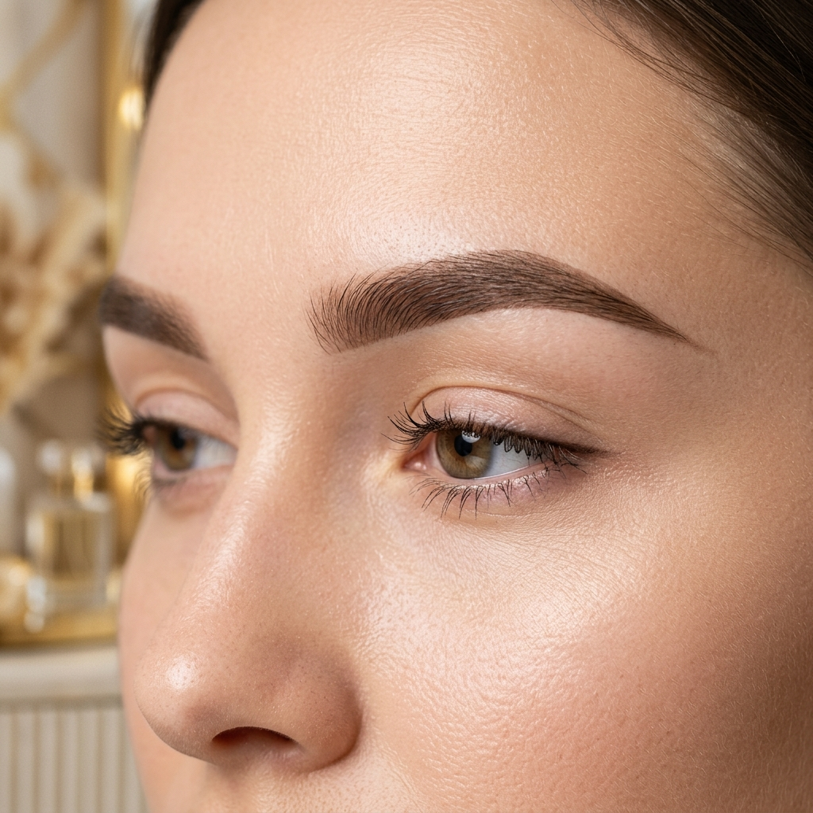
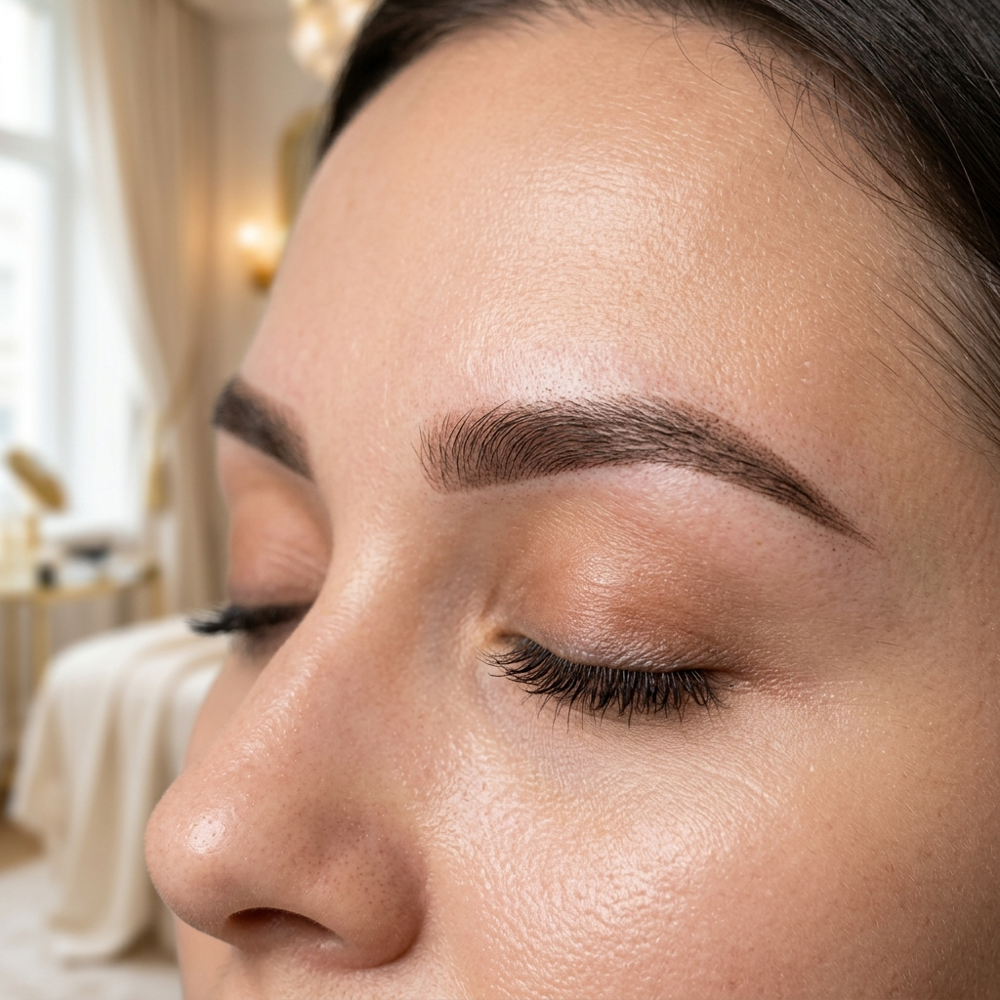
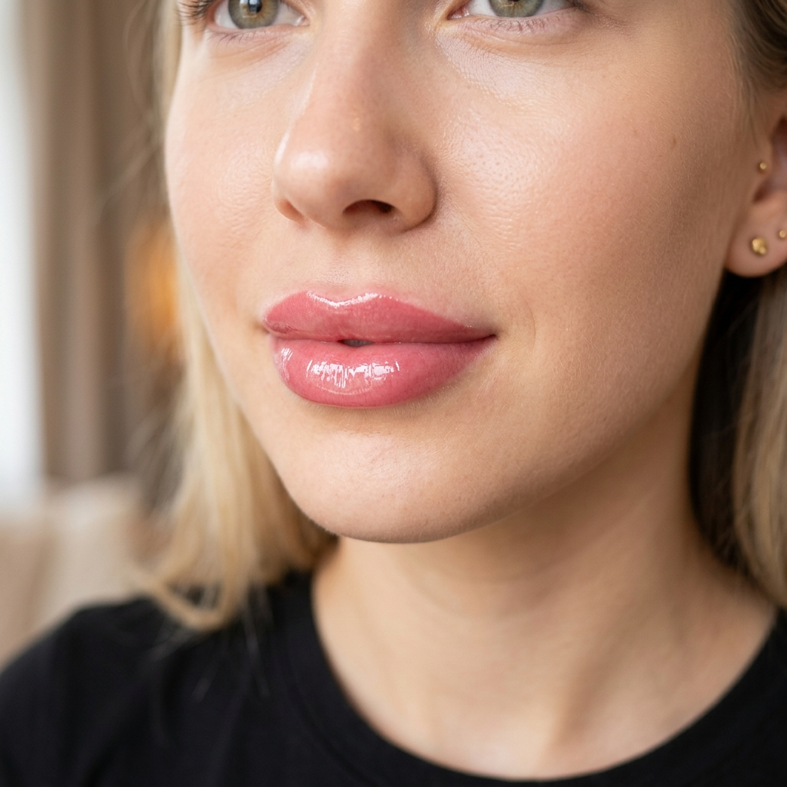

Avant / Après


Microshading Restructuration
Comblement des zones éparses et restructuration complète
Avant / Après


Candy Lips Rose Naturel
Correction de l'asymétrie et pigmentation effet lèvres mordues
Prestation

Brazilian Shadow Zoom
Focus sur la progressivité du dégradé brésilien
Avant / Après


Brazilian Shadow Intensité
Redéfinition de la ligne et densification de la queue du sourcil
Avant / Après


Candy Lips Pêche Doré
Ravivage de teinte sur lèvres naturellement claires
Prestation

Microshading Poudré
Rendu pixelisé cicatrisé, effet crayon léger